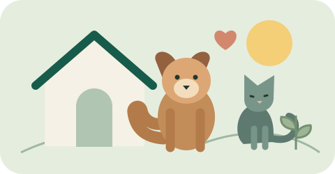

Situación actual
- Animales registrados: 3.
- Animales en atención u observación: 2.
- Casos de urgencia alta: 1.
Estos datos corresponden a los casos de ejemplo.
Huella Segura
Este sistema presenta los casos de animales rescatados por nuestro refugio.
Para informar sobre un animal, completa el formulario de reporte.

Estos datos corresponden a los casos de ejemplo.
Huella Segura es un refugio ficticio de Manabí, creado para esta actividad académica. Su objetivo es apoyar el rescate y el cuidado de los animales.
Ubicación: Manabí, Ecuador.
Correo de ejemplo: contacto@huellasegura.example.
Horario: lunes a viernes, de 08:00 a 17:00.